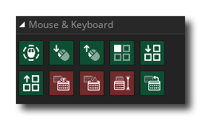

La bibliothèque d'actions Souris et clavier vous permet de trouver les actions requises pour interroger et traiter les entrées à partir du clavier ou de la souris. Les actions disponibles sont toutes répertoriées ci-dessous:
 | Si la souris est pressée |
 | Si la souris bas |
 | Si la souris est relâchée |
 | Si le clavier est enfoncé |
| Si le clavier est en panne | |
 | Si le clavier est relâché |
Les trois autres actions ici font référence au clavier virtuel. Si vous avez besoin de saisir du texte ou des chiffres dans votre jeu sur un appareil à écran tactile, vous pouvez utiliser les actions du clavier virtuel fournies pour utiliser le clavier du système d'exploitation de l'appareil. Ces actions appellent ou masquent le clavier du système d'exploitation et acceptent les entrées de la même manière qu'un clavier physique. Par conséquent, les actions de clavier normales de GameMaker Studio 2 doivent toutes fonctionner avec des claviers virtuels (par exemple, l'action "Si la touche est relâchée"), et toute entrée du clavier virtuel sera stockée dans les différentes variables du clavier, comme keyboard_string, ou keyboard_last_char, etc...).
L’ouverture ou la fermeture du clavier virtuel générera des événements système asynchrones, dans lesquels le async_load La carte DS sera remplie avec les paires clé / valeur suivantes:
- " event_type " - le type d'événement système reçu, qui sera "l' état du clavier virtuel " pour les claviers virtuels.
- " screen_height " - la hauteur du clavier virtuel (en pixels). Ce sera 0 si le clavier est invisible.
- " keyboard_status " - l'état actuel du clavier, renvoyé sous l'une des chaînes suivantes:
- "cache"
- "caché"
- "montrer"
- "visible"
Les actions de clavier virtuel disponibles sont les suivantes:
| Afficher le clavier virtuel | |
 | Masquer le clavier virtuel |
 | Obtenir la hauteur du clavier virtuel |
| Si le clavier virtuel est affiché |